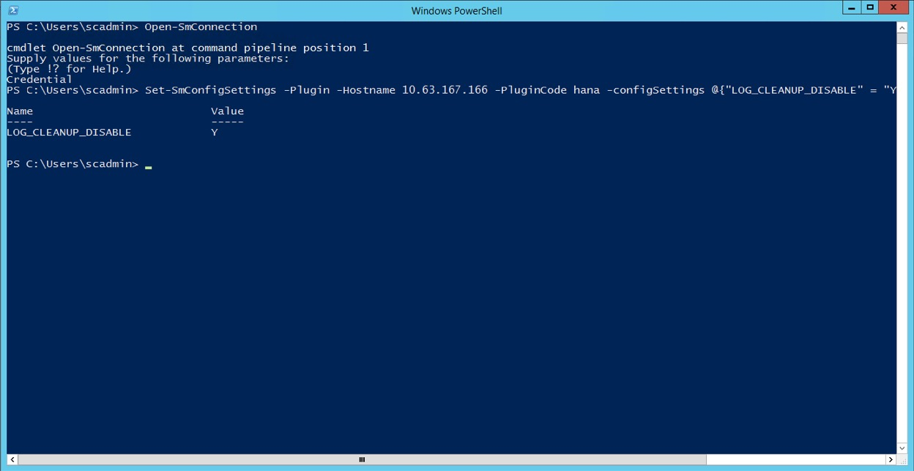
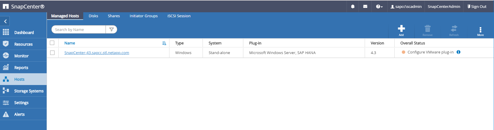
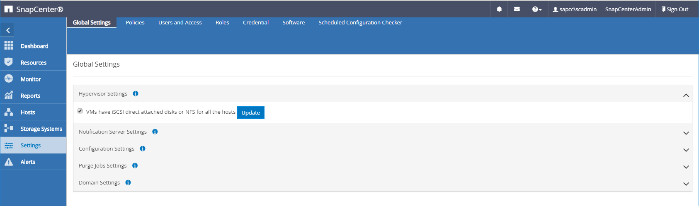
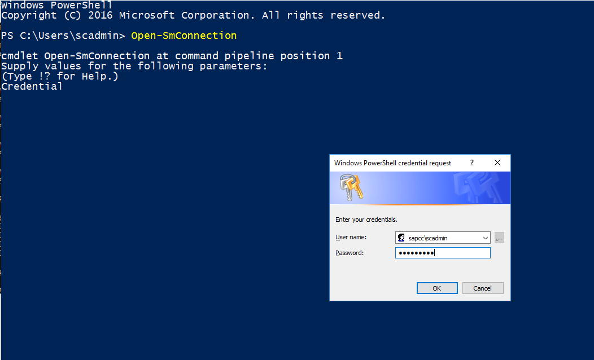
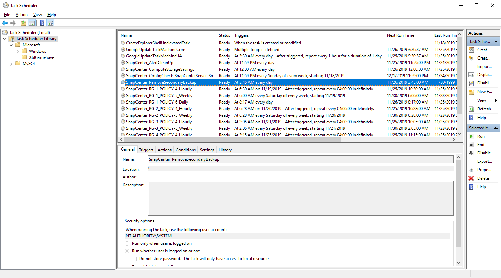

最佳实践
最佳实践
高级配置和调整
 建议更改
建议更改
本节介绍客户可用于根据其特定需求调整 SnapCenter 设置的配置和调整选项。并非所有设置都适用于所有客户情形。
启用与 HANA 数据库的安全通信
如果为 HANA 数据库配置了安全通信，则由 SnapCenter 执行的 hdbsql 命令必须使用其他命令行选项。要实现此目的，可以使用 wrapper 脚本，该脚本使用所需的选项调用 hdbsql 。

|
可通过多种选项配置 SSL 通信。在以下示例中，使用命令行选项描述了最简单的客户端配置，其中不会执行服务器证书验证。如果需要在服务器端和 / 或客户端上验证证书，则需要使用不同的 hdbsql" 命令行选项，并且必须按照 SAP HANA 安全指南中所述相应地配置 PSE 环境。 |
此时将添加 wrapper 脚本，而不是在 hana.properties 文件中配置 hdbsql 可执行文件。
对于 SnapCenter Windows 服务器上的中央 HANA 插件主机，必须在 C ： \Program Files\NetApp\SnapCenter\SnapCenter Plug-in Creator\etc\hana.properties 中添加以下内容。
HANA_HDBSQL_CMD=C:\\Program Files\\sap\\hdbclient\\hdbsql-ssl.cmd
wrapper script hdbsql-ssl.cmd 使用所需的命令行选项调用 hdbsql.exe 。
@echo off "C:\Program Files\sap\hdbclient\hdbsql.exe" -e -ssltrustcert %*
|
|
` -e - ssltrustcert` hdbsqll 命令行选项也适用于未启用 SSL 的 HANA 系统。因此，此选项也可用于中央 HANA 插件主机，其中并非所有 HANA 系统都启用或禁用了 SSL 。 |
如果 HANA 插件部署在单个 HANA 数据库主机上，则必须相应地在每个 Linux 主机上进行配置。
HANA_HDBSQL_CMD = /usr/sap/SM1/HDB12/exe/hdbsqls
wrapper script hdbsqls calls hdbsqll with the required command-line options.
#/bin/bash /usr/sap/SM1/HDB12/exe/hdbsql -e -ssltrustcert $*
在 HANA 插件主机上禁用自动发现
要在 HANA 插件主机上禁用自动发现，请完成以下步骤：
-
在 SnapCenter 服务器上，打开 PowerShell 。运行
Open- SmConnection命令连接到 SnapCenter 服务器，并在打开的登录窗口中指定用户名和密码。 -
要禁用自动发现，请运行
SET- SmConfigSettings命令。对于 HANA 主机
HANA -2，命令如下所示：PS C:\Users\administrator.SAPCC> Set-SmConfigSettings -Agent -Hostname hana-2 -configSettings @{"DISABLE_AUTO_DISCOVERY"="true"} Name Value ---- ----- DISABLE_AUTO_DISCOVERY true PS C:\Users\administrator.SAPCC> -
运行
Get- SmConfigSettings命令验证配置。PS C:\Users\administrator.SAPCC> Get-SmConfigSettings -Agent -Hostname hana-2 -key all Key: CUSTOMPLUGINS_OPERATION_TIMEOUT_IN_MSEC Value: 3600000 Details: Plug-in API operation Timeout Key: CUSTOMPLUGINS_HOSTAGENT_TO_SERVER_TIMEOUT_IN_SEC Value: 1800 Details: Web Service API Timeout Key: CUSTOMPLUGINS_ALLOWED_CMDS Value: *; Details: Allowed Host OS Commands Key: DISABLE_AUTO_DISCOVERY Value: true Details: Key: PORT Value: 8145 Details: Port for server communication PS C:\Users\administrator.SAPCC>
此配置将写入主机上的代理配置文件，在使用 SnapCenter 进行插件升级后，此配置仍可用。
hana-2:/opt/NetApp/snapcenter/scc/etc # cat /opt/NetApp/snapcenter/scc/etc/agent.properties | grep DISCOVERY DISABLE_AUTO_DISCOVERY = true hana-2:/opt/NetApp/snapcenter/scc/etc #
停用自动日志备份管理
默认情况下，日志备份管理处于启用状态，可以在 HANA 插件主机级别禁用。可以通过两种方法更改这些设置。
编辑 hana.property 文件
将参数 log_cleanup_disable = Y 包含在 hana.property 配置文件中，将此 SAP HANA 插件主机用作通信主机的所有资源禁用日志备份整理：
-
对于 Windows 上的 Hdbsql 通信主机，
hana.property文件位于C ： \Program Files\NetApp\SnapCenter\SnapCenter Plug-in Creator\etc。 -
对于 Linux 上的 Hdbsqll 通信主机，
hana.property文件位于 ` /opt/netapp/snapcenter/SCC/etc` 。
使用 PowerShell 命令
配置这些设置的第二个选项是使用 SnapCenter powershell 命令。
-
在 SnapCenter 服务器上，打开 PowerShell 。使用命令
Open- SmConnection连接到 SnapCenter 服务器，并在打开的登录窗口中指定用户名和密码。 -
使用命令
Set- SmConfigSettings -Plugin - hostname <pluginhostname> - PluginCode HANA - configSettings @ ｛ "log_cleanup_disable" = "Y" ｝，可以为 IP 或主机名指定的 SAP HANA 插件主机 ` <pluginhostname>` 配置更改（请参见下图）。

在虚拟环境中运行 SAP HANA 插件时禁用警告
SnapCenter 会检测 SAP HANA 插件是否安装在虚拟化环境中。这可以是 VMware 环境，也可以是公有 云提供商的 SnapCenter 安装。在这种情况下， SnapCenter 会显示一条警告来配置虚拟机管理程序，如下图所示。

可以全局禁止此警告。在这种情况下， SnapCenter 无法识别虚拟化环境，因此不会显示这些警告。
要配置 SnapCenter 以禁止此警告，必须应用以下配置：
-
从设置选项卡中，选择全局设置。
-
对于虚拟机管理程序设置，请为所有主机选择虚拟机具有 iSCSI 直连磁盘或 NFS 并更新设置。

更改与异地备份存储同步备份的计划频率
如一节所述 "" 二级存储备份的保留管理 " ，" ONTAP 负责对异地备份存储的数据备份进行保留管理。SnapCenter 会定期检查 ONTAP 是否已删除异地备份存储上的备份，方法是使用每周默认计划运行清理作业。
如果发现异地备份存储中任何已删除的备份， SnapCenter 清理作业将删除 SnapCenter 存储库以及 SAP HANA 备份目录中的备份。
清理作业还会对 SAP HANA 日志备份执行后台管理。
在完成此计划清理之前， SAP HANA 和 SnapCenter 可能仍会显示已从异地备份存储中删除的备份。
|
|
这样可能会保留更多日志备份，即使异地备份存储上相应的基于存储的 Snapshot 备份已被删除也是如此。 |
以下各节介绍了避免这种临时差异的两种方法。
在资源级别手动刷新
在资源的拓扑视图中，选择二级备份时， SnapCenter 会显示异地备份存储上的备份，如以下屏幕截图所示。SnapCenter 使用刷新图标执行清理操作，以同步此资源的备份。

更改 SnapCenter 清理作业的频率
默认情况下， SnapCenter 会使用 Windows 任务计划机制每周对所有资源执行清理作业 SnapCenter_RemoveSecondaryBackup 。可以使用 SnapCenter PowerShell cmdlet 更改此设置。
-
在 SnapCenter 服务器上启动 PowerShell 命令窗口。
-
打开与 SnapCenter 服务器的连接，并在登录窗口中输入 SnapCenter 管理员凭据。

-
要将计划从每周更改为每天，请使用 cmdlet
SET- SmSchedule。PS C:\Users\scadmin> Set-SmSchedule -ScheduleInformation @{"ScheduleType"="Daily";"StartTime"="03:45 AM";"DaysInterval"= "1"} -TaskName SnapCenter_RemoveSecondaryBackup TaskName : SnapCenter_RemoveSecondaryBackup Hosts : {} StartTime : 11/25/2019 3:45:00 AM DaysoftheMonth : MonthsofTheYear : DaysInterval : 1 DaysOfTheWeek : AllowDefaults : False ReplaceJobIfExist : False UserName : Password : SchedulerType : Daily RepeatTask_Every_Hour : IntervalDuration : EndTime : LocalScheduler : False AppType : False AuthMode : SchedulerSQLInstance : SMCoreContracts.SmObject MonthlyFrequency : Hour : 0 Minute : 0 NodeName : ScheduleID : 0 RepeatTask_Every_Mins : CronExpression : CronOffsetInMinutes : StrStartTime : StrEndTime : PS C:\Users\scadmin> Check the configuration using the Windows Task Scheduler. -
您可以在 Windows 任务计划程序中检查作业属性。
